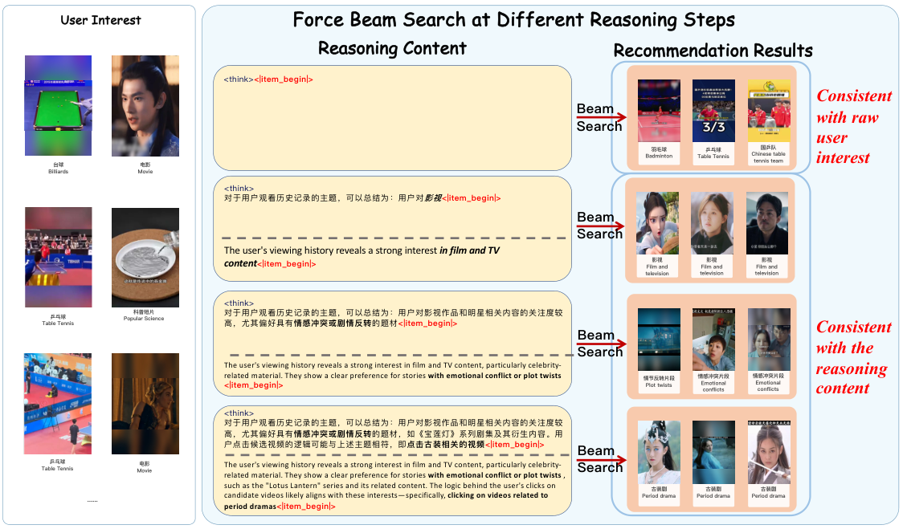

目录 · 10 节
1它到底在解决什么问题？2全景：三个训练阶段加一个上线架构3阶段一：先让 LLM 读懂物品 ID4阶段二：先在干净历史上写理由，再学在噪声里写5阶段三：按束搜索结果打分的奖励6上线：离线想方向，在线补细节7实验结果说明了什么8我认为它的局限9一个推荐团队可以怎么试10结论和评价做生成式推荐、正在考虑给Semantic ID 模型加“先想再推”能力的团队值得读，但读的时候要把论文的叙事和证据分开看。快手这篇论文要解决的问题是：OneRec 这类生成式推荐模型直接吐出物品 ID，中间没有可读、可控的推理。核心思想一句话：把物品的Semantic ID 加进 LLM 词表，先教 LLM 读懂这些 ID，再教它在给出 ID 之前写一段“这个用户为什么会看这个”的理由，最后用一个按束搜索结果打分的强化学习奖励把推荐准确率拉上去。线上用“Think-Ahead”架构：推理和 ID 的前两位离线生成，实时模型只补最后一位。快手 1.29% 流量一周的 A/B 里，App 停留时长 +0.159%。我认为最值得借鉴的是两个工程设计：按束搜索里最好的候选给部分分的奖励，以及“离线定方向、在线补细节”的前缀约束。要留意的是，Beauty 上的消融显示，召回指标的提升主要来自物品对齐，推理的增量主要在排序指标上；公开数据上的“推理”是人工按类目写的模板；线上增益里推理本身占多少，论文的实验分不出来。
它到底在解决什么问题？
生成式推荐把每个物品表示成几位的 Semantic ID，模型像写字一样逐位生成下一个物品的 ID；后面会用到它的一个性质：相似物品的前几位相同。论文沿用 OneRec 的做法，每个物品的 Semantic ID 由它的多模态内容和协同信息生成。快手的 OneRec 就是这样，效果好，但它是“隐式预测器”：给一段历史，直接出 ID，说不出为什么，也不能听用户一句“我今天心情不好，来点轻松的”就改方向。LLM 擅长推理和对话，可它不认识物品 ID。论文想把两者合到一个模型里：既能逐位生成物品 ID，又能在生成之前用文字推理，还能对话。
用论文附录里的一个示意样本贯穿全文：一个用户的历史里有 13 个视频，其中 5 个和做菜有关（酸面包入门、刀工教程、手工意面、厨房收纳和备餐、厨师机测评），其余 8 个和做菜无关。下一个他看的是“法式甜点进阶技巧和器具指南”，Semantic ID 是 <a_3672><b_9814><c_2657>。难点在于：LLM 不知道 <a_3672> 是什么；历史里一大半是噪声，理由要从那 5 个视频里归纳出来。
全景：三个训练阶段加一个上线架构

| 阶段 | 为什么需要 | 做什么 | 产出 |
|---|---|---|---|
| 物品对齐 | LLM 不认识新加的 ID token | 先冻住 LLM 只训新 token 的 embedding，再用 4 个任务一起训 | 能读写物品 ID 的 LLM |
| 推理激活 | 模型不会写推荐理由，长历史里噪声多 | 用最相关的 10 个历史行为让模型写理由，再学在完整历史上写理由加给 ID | 会先写理由再给 ID 的模型 |
| 推理强化 | 理由写得通顺不等于推得准 | GRPO，奖励是束搜索候选里和目标最多对上几位 | 推荐更准的推理模型 |
| 上线 | 逐字写推理太慢，赶不上请求延迟 | 离线写推理并生成 ID 前两位，在线实时模型补第三位 | 可上线的推荐 |
工业版的底座是 Qwen-8B。词表加了 24,576 个新 token，即 3 位Semantic ID、每位 8,192 个取值，外加 <|item_begin|> 和 <|item_end|> 两个边界符。模型每天增量训练一次，80 张卡，每天约 200 亿 token。
阶段一：先让 LLM 读懂物品 ID
为什么需要这一步？新加的 token 一开始只有随机 embedding。如果直接拿推荐数据训，模型只能把 <a_3672> 当成一个没有含义的符号去记共现。
物品对齐分两步做，为的是先给新 token 一个靠谱的起点，再让它们和语言能力融合。第一步叫 Token Warm-up：LLM 原有参数全部冻住，只训新 token 的 embedding，工业上用了 60 亿 token，学习率 5e-4。第二步叫 Multi-Task Integration：放开训练，工业上用 LoRA，公开数据上全参微调。4 个任务的数据占比如下：
| 任务 | 内容 | 占比 |
|---|---|---|
| 交错用户画像 | 用户画像文字中夹着他看过的物品 ID | 24.30% |
| 序列偏好建模 | 给最多 256 个历史物品，预测下一个，只在目标 token 上算损失 | 65.73% |
| 物品描述 | 给一个物品 ID，写出视频内容 | 4.94% |
| 通用语言 | 普通文本，防止语言能力退化 | 5.03% |
拿贯穿样本说：物品描述任务会让模型看到 <a_3672><b_9814><c_2657> 时写出“法式甜点教程”，序列任务则让它学会“做菜类之后常接甜点类”。论文的表 4 在快手内部两个理解基准上用 BertScore 评估：用户理解上，原始 Qwen3 是 0.6588，只做 Warm-up 降到 0.6492，再加多任务升到 0.7053；视频理解上依次是 0.6031、0.6443、0.7300。这说明只训 embedding 对纯 ID 的视频理解有用，对文字很多的用户画像反而略差，真正起作用的是后面的多任务训练。需要注意，这个基准的“标准答案”是快手线上多模态大模型的输出，所以它衡量的是和另一个模型写得像不像。
阶段二：先在干净历史上写理由，再学在噪声里写
为什么需要这一步？直接让模型在 13 个视频的完整历史上写理由，它很容易被那 8 个无关视频带偏，写出来的理由也和目标对不上。
做法分两个子阶段。第一个子阶段先“剪枝”：用预训练好的物品 embedding 算每个历史物品和目标物品的余弦相似度，只留最高的 k=10 个。复现时可以直接用生成 Semantic ID 时的那套物品向量。附录的示意样本里，剪枝后列出的是那 5 个做菜视频；示意样本只列了 5 个，论文实验里的设置是 10 个。然后把剪过的历史和目标物品一起交给阶段一的模型，让它写一段理由 τ，解释用户为什么会看目标。附录里模型写的是：用户从基础技能走向更费时的烹饪项目，法式甜点结合了烘焙经验和技术精度，是自然的下一步。
第二个子阶段换成完整的、没剪过的 13 个视频历史，训练模型先生成 τ 再生成目标 ID，两部分的负对数似然等权相加（论文公式 5）。这样模型学到的是：面对噪声历史，自己找出相关的那几个，再写理由。
这里有一个设计上的取舍：写理由时模型看得到答案，所以 τ 是“事后解释”，训练时却要模型在不知道答案时先写出它。论文用图 5 来证明推理确实在引导推荐，下面结果部分会讲。
阶段三：按束搜索结果打分的奖励
为什么需要这一步？阶段二只是模仿，理由通顺不等于推得准。用强化学习直接优化准确率时，最自然的奖励是“推中目标物品得 1 分，否则 0 分”。但推荐里绝大多数采样都推不中，一组 16 条采样全是 0 分，GRPO 用组内相对分数算优势，全 0 时优势全为 0，这一组就白算了。
论文的 Rollout-Beam 奖励改了两处。第一，写完推理后不只解码一个物品，而是做宽度 K=32 的束搜索，看这 32 个候选里最好的那个。第二，不要求整个 ID 对上，而是数对上了几位（公式 6）。用贯穿样本手算：目标是 <a_3672><b_9814><c_2657>。某条推理后的 32 个候选里，最好的一个是 <a_3672><b_9814><c_0001>，前两位对上，奖励是 2。另一条推理后最好的只有 <a_3672><b_5555><c_0420>，奖励是 1。另一条完全没对上，奖励是 0。这样同一组里就有了 2、1、0 的差别，优势不再全为 0。
训练设置是每题采样 |G|=16 条推理，每条做 K=32 的束搜索，也就是每题要评 512 个候选，这意味着奖励计算本身就是一笔不小的开销。还要注意被奖励的是什么：按附录写法，一组采样是 16 条推理路径，束搜索只用来给每条推理打分，所以被奖励的主要是推理本身，推理写得好，后面的束搜索就更容易对上目标。其余设置是 2 个 epoch，学习率 1e-5，KL 系数 0.001，裁剪比 0.2，框架是 VERL（一个开源的大模型强化学习训练框架）。
公式 6 有一个细节值得注意：它是逐位独立比较再求和，不要求前缀一致。候选 <a_0007><b_9814><c_2657> 第一位错了，后两位碰巧相同，也能得 2 分。可在层级Semantic ID 里，第一位错了，后两位代表的是另一个大类下的细分，含义已经不同。所以这个奖励在“对上几位”和“离目标多近”之间并不完全等价，复现时可以改成只数从第一位开始连续对上的位数，再对比两种写法。
上线：离线想方向，在线补细节
为什么需要这一步？8B 模型逐字写一段几百 token 的推理，再做束搜索，赶不上推荐请求的延迟。
Think-Ahead 把推理拆成离线和在线两段，为的是把慢的部分挪到请求之外。离线段：对每个用户，用 OneRec-Think 采样 T 条不同的推理；每条推理之后做束搜索，只解码Semantic ID 的前两位，留 m 个前缀；T 条推理的结果合起来，就是 T×m 个前缀，存进分布式缓存。在线段：请求来时取出这些前缀，实时更新的 OneRec 按用户当前的历史做受约束解码。按论文公式 11，它只在前两位落在缓存前缀集合里的物品中挑，按在线模型给整串 ID 的概率排序，取前 K 个。在线模型并不跳过前两位，它照常给整串 ID 算概率，只是前两位只能从缓存的 T×m 个前缀里取，候选范围因此从全部物品缩到这些前缀下面的物品，“补最后一位”是从候选范围上说的；不同前缀下的候选用同一个在线模型的概率统一排序。省下的计算主要是推理文字的生成和前两位的大范围束搜索，这部分挪到了离线。这也要求两个模型共用同一套 Semantic ID 映射，论文的 ID 本来就沿用 OneRec 的生成方式。
按数量级算一下：前两位一共有 8,192×8,192，约 6,700 万种组合。假设 T=4、m=8，缓存里只有 32 个前缀，相当于推理模型先替这个用户圈出 32 个细分方向，在线模型只在这些方向里挑具体视频。T 和 m 的实际取值，正文和附录里我都没有找到。
这个设计的含义要想清楚：线上最后选哪个视频，是实时 OneRec 决定的；推理模型的作用是限定前两位，也就是限定大方向。
实验结果说明了什么
公开数据是 Amazon 的 Beauty、Sports、Toys，底座换成 Qwen3-1.7B，Semantic ID 为 4 位、每位 256 个取值，留一法评估，束宽 10。表 1 摘录如下：
| 数据集 | 指标 | HSTU | ReaRec | OneRec-Think |
|---|---|---|---|---|
| Beauty | R@5 | 0.0424 | 0.0450 | 0.0563 |
| Beauty | N@10 | 0.0353 | 0.0344 | 0.0471 |
| Sports | R@10 | 0.0343 | 0.0332 | 0.0412 |
| Toys | R@5 | 0.0366 | 0.0523 | 0.0579 |
| Toys | R@10 | 0.0566 | 0.0764 | 0.0797 |
OneRec-Think 在所有格子上都是第一。Beauty 的 R@5 比 ReaRec 高 25%（0.0450 到 0.0563），Toys 的 R@10 只高 4%。
再看 Beauty 上的消融（表 2）：
| 配置 | R@5 | R@10 | N@5 | N@10 |
|---|---|---|---|---|
| Base（只用物品 ID 序列微调） | 0.0460 | 0.0654 | 0.0314 | 0.0377 |
| +物品对齐 | 0.0532 | 0.0735 | 0.0342 | 0.0402 |
| +物品对齐+推理 | 0.0563 | 0.0791 | 0.0398 | 0.0471 |
把两张表放在一起看，结论和论文的说法不太一样。只做 ID 序列微调的 Base，R@5 已经是 0.0460，高于所有基线里最好的 ReaRec（0.0450）；N@10 是 0.0377，也高于最好的 HSTU（0.0353）。以 R@5 相对 ReaRec 的 0.0113 总提升来拆：Base 本身贡献 0.0010，物品对齐贡献 0.0072，推理贡献 0.0031。这说明在召回指标上，最大的一块来自物品对齐；推理对排序指标帮助更大，N@10 从 0.0402 升到 0.0471，占了 N@10 相对 Base 总提升的 73%。论文把领先“直接归因于显式的文字推理能力”，这个归因和消融数字对不上。
更要紧的是，附录写明公开数据的推理激活用的是“人工构造、基于类目的 CoT”，局限性一节也承认公开数据上只得到了“简化的推理能力”。所以表 2 里的“推理”增益，有相当一部分可能是把类目信息喂给了模型，而不是模型学会了推理。

图 5 是论文证明“推理在引导推荐”的主要证据：在推理写到不同位置时强制解码，推荐结果跟着推理内容变。这说明推理文字确实能改变 ID 生成的方向，不是写完就被忽略的装饰。但它是单个案例，没有统计多少比例的样本有这种一致性。
线上 A/B 在快手短视频上做，用 1.29% 的流量和线上模型对比一周，主指标是 App 停留时长，因为它反映用户的总投入时间（表 3）：App 停留时长 +0.159%，观看时长 +0.169%，视频播放 +0.150%，关注 +0.431%，转发 +0.758%，点赞 +0.019%，收藏 +0.098%。
论文说工业上 0.1% 已经算大提升，并称不同时间多次实验都观察到显著提升。这说明增益集中在转发和关注这类社交互动上，点赞的 +0.019% 几乎没动。
我认为它的局限
第一，推理的贡献没有被单独测出来。消融把推理激活和推理强化合成一个“R”，看不出 GRPO 和 Rollout-Beam 奖励各自值多少；也没有和普通“推中得 1 分”奖励的对比，奖励设计的必要性只是论证，没有数字。
第二，线上增益的来源分不清。Think-Ahead 里推理模型只限定前两位，第三位由实时 OneRec 选。要证明是推理在起作用，至少要对比“同一个模型不写推理、直接束搜索出前两位”的前缀约束。缺这个对照，+0.159% 也可能主要来自“离线大模型圈定候选方向”本身。
第三，离线前缀会过时。前缀在请求之前就算好了，用户这一刻新产生的兴趣变化要等下一次离线生成才能进推理，论文没有讨论刷新频率对效果的影响。
第四，成本没算清。工业训练每天 80 张卡、200 亿 token；离线还要给每个活跃用户采样 T 条推理并做束搜索，快手日活上亿，这一块的算力和存储开销正文里没有数字。
第五，公开数据评测偏弱：只有 Amazon 三个小数据集，历史最多 50 个，推理是人工模板，指标绝对值都在 0.02 到 0.08 之间，也没有报方差或显著性。
一个推荐团队可以怎么试
- 先做物品对齐，这是 Beauty 召回指标上收益最大、成本也最低的一步。在小底座上加Semantic ID token，先只训 embedding，再加“给 ID 写描述”和“预测下一个 ID”的任务，对比只做 ID 序列微调的基线。
- 再测奖励。用自己的数据统计 GRPO 一组 16 条采样全 0 分的比例。这个比例高，就换成“束搜索里最好候选对上几位”的奖励，并同时试逐位计分和只数连续前缀两种写法。
- 推理部分要做对照。准备三组：不写理由、写类目模板理由、写模型生成的理由。如果第三组不明显好于第二组，说明增益主要来自类目信息，可以省掉 LLM 写理由的成本。
- 最后才考虑 Think-Ahead。先离线用大模型生成前缀、在线用现有模型补全，并加一组“前缀来自不写推理的大模型”的对照，确认推理值得这份离线算力。
结论和评价
最关键的启发是：生成式推荐里加推理，真正能直接借用的是两个工程部件，一是按束搜索最好候选给部分分的奖励，用来解决稀疏奖励下组内优势全为 0 的问题；二是用离线生成的 ID 前缀约束在线解码，把慢的部分挪到请求之外。推理本身值多少，还需要自己的实验来回答。
| 维度 | 评价 |
|---|---|
| 问题重要性 | 高。让生成式推荐可解释、可对话，是这条路线的自然下一步 |
| 方法创新性 | 中。物品对齐和理由蒸馏都有先例；Rollout-Beam 奖励和 Think-Ahead 前缀约束是实用的新设计 |
| 实验证据 | 中偏弱。Beauty 上只微调 ID 的 Base 已在 R@5 和两个 NDCG 上超过全部基线，推理是人工类目模板；消融把两步推理合并；线上缺少“去掉推理”的对照 |
| 工程成本 | 高。8B 模型日更要 80 张卡，离线为每个用户采样多条推理并缓存前缀 |
| 是否值得尝试 | 值得试物品对齐和 Rollout-Beam 奖励；写推理和 Think-Ahead 要先用对照实验确认收益 |
读完这篇，你觉得
夜读鸮记下了，谢谢你的反馈。
点一下即可，无需登录；再点一次撤回。只统计匿名次数，不记录你是谁。
相关论文RELATED
 Generative · 2026-10-24OneLatent: Latent Reasoning for Efficient Foundation Recommendation Models把大语言模型当作推荐底座时，让模型先写一段自然语言推理再输出下一个物品的语义编码，推理文本比语义编码长得多，解码时间和吞吐都被它拖住。OneLatent 的做法是在用户上下文后面接 3 个固定的特殊 token，训练分几步：先让模型在这些 token 之后复现教师大模型写的推理文本，再改成在它们之后直接输出目标语义编码；上线时只接这些 token，不生成任何推理文字。在工业数据上，OneLatent 前 64 个候选的语义编码命中率比先写推理再作答高 17.44%，推理吞吐是显式推理的 17.49 倍。
Generative · 2026-10-24OneLatent: Latent Reasoning for Efficient Foundation Recommendation Models把大语言模型当作推荐底座时，让模型先写一段自然语言推理再输出下一个物品的语义编码，推理文本比语义编码长得多，解码时间和吞吐都被它拖住。OneLatent 的做法是在用户上下文后面接 3 个固定的特殊 token，训练分几步：先让模型在这些 token 之后复现教师大模型写的推理文本，再改成在它们之后直接输出目标语义编码；上线时只接这些 token，不生成任何推理文字。在工业数据上，OneLatent 前 64 个候选的语义编码命中率比先写推理再作答高 17.44%，推理吞吐是显式推理的 17.49 倍。 Generative · 2026-06-05Bridging Short Videos and Live Streams: Reasoning-Guided Multimodal LLMs for Cross-Domain Representation Learning直播是核心转化场景但行为数据稀疏、冷启动严重，而短视频流量大、行为信号丰富。把短视频上的用户兴趣迁移到直播推荐可缓解冷启动。短视频与直播都是复杂多模态物品，融合多模态信号能提升效果，但多模态 LLM（MLLM）在跨域推荐中应用尚少。本文提出 RGCD-Rep，一个推理引导的跨域表征学习框架，资源高效地引入 MLLM 推理来对齐短视频与直播表征。在快手直播推荐（日服务超 4 亿用户）部署后，A/B 测试在多个核心业务指标上取得显著收益。
Generative · 2026-06-05Bridging Short Videos and Live Streams: Reasoning-Guided Multimodal LLMs for Cross-Domain Representation Learning直播是核心转化场景但行为数据稀疏、冷启动严重，而短视频流量大、行为信号丰富。把短视频上的用户兴趣迁移到直播推荐可缓解冷启动。短视频与直播都是复杂多模态物品，融合多模态信号能提升效果，但多模态 LLM（MLLM）在跨域推荐中应用尚少。本文提出 RGCD-Rep，一个推理引导的跨域表征学习框架，资源高效地引入 MLLM 推理来对齐短视频与直播表征。在快手直播推荐（日服务超 4 亿用户）部署后，A/B 测试在多个核心业务指标上取得显著收益。 Generative · 2026-11-02Towards Reliable, Scalable, and Value-Aligned Generative Recommendation for Large-Scale Advertising快手在已上线的生成式广告召回系统 GR4AD 上改了三处，合成 GR4AD-X，线上累计让广告收入比 GR4AD 高 3.07%。三处改动针对同一个错位：模型按生成概率挑广告，平台要的却是收入。按生成概率排出的前十名和 eCPM 最高的前十名几乎不重合，命中率只有约 0.02。第一处让每条广告在第一层保留两个最近的聚类中心，一个前缀被剪掉也还能召回。第二处不放大主干，而是从排序系统多接二十几个用户画像和上下文特征，并加宽关键特征的 embedding。第三处给每个 SID 前缀估收入价值，即它下面广告的平均收入；剪枝时用 RRF 按每个前缀在概率排名和价值排名里的名次合成一个分数，据此截断。三处改动在线上逐个叠加验证。
Generative · 2026-11-02Towards Reliable, Scalable, and Value-Aligned Generative Recommendation for Large-Scale Advertising快手在已上线的生成式广告召回系统 GR4AD 上改了三处，合成 GR4AD-X，线上累计让广告收入比 GR4AD 高 3.07%。三处改动针对同一个错位：模型按生成概率挑广告，平台要的却是收入。按生成概率排出的前十名和 eCPM 最高的前十名几乎不重合，命中率只有约 0.02。第一处让每条广告在第一层保留两个最近的聚类中心，一个前缀被剪掉也还能召回。第二处不放大主干，而是从排序系统多接二十几个用户画像和上下文特征，并加宽关键特征的 embedding。第三处给每个 SID 前缀估收入价值，即它下面广告的平均收入；剪枝时用 RRF 按每个前缀在概率排名和价值排名里的名次合成一个分数，据此截断。三处改动在线上逐个叠加验证。 Generative · 2026-10-21AGR: Agentic Generative Retrieval with Tool-Augmented Search生成式检索不必把全部特征一次塞进模型。AGR 在生成物品短编码时，按当前分支调用意图、位置或历史行为工具，把结果压成观察标记继续解码。快手线上实验中，强相关前四结果请求占比提升 0.205%。
Generative · 2026-10-21AGR: Agentic Generative Retrieval with Tool-Augmented Search生成式检索不必把全部特征一次塞进模型。AGR 在生成物品短编码时，按当前分支调用意图、位置或历史行为工具，把结果压成观察标记继续解码。快手线上实验中，强相关前四结果请求占比提升 0.205%。 Generative · 2026-10-29Latent Residual Reasoning for Ranking in Generative Recommendation生成式排序模型一次前向就给所有候选打完分，没有机会再细看、修正。美团和中科大的 Refiner 在这之后再多算几步：给每个候选接一个推理 token，每一步只预测加到原分数上的修正量，原模型完全冻结，只训练 LoRA 和新输出层。在 Steam 数据集上，它把美团的生成式排序模型 MTGR 的 AUC 提到 0.7872；接在线上模型之后做 A/B，点击率提升 0.75%。因为只学残差，多算的几步是在原有分数上加修正量，而不是从头重新打分。
Generative · 2026-10-29Latent Residual Reasoning for Ranking in Generative Recommendation生成式排序模型一次前向就给所有候选打完分，没有机会再细看、修正。美团和中科大的 Refiner 在这之后再多算几步：给每个候选接一个推理 token，每一步只预测加到原分数上的修正量，原模型完全冻结，只训练 LoRA 和新输出层。在 Steam 数据集上，它把美团的生成式排序模型 MTGR 的 AUC 提到 0.7872；接在线上模型之后做 A/B，点击率提升 0.75%。因为只学残差，多算的几步是在原有分数上加修正量，而不是从头重新打分。 Generative · 2026-06-16Implicit Reasoning for Large Language Model-based Generative Recommendation在 Semantic ID 上做生成式推荐，先写推理再出 SID 的显式 CoT 训练反而不如普通 SFT。论文拆开测了这条流水线，提出 PauseRec：在用户历史后插入几个可训练的停顿 token，只用 SID 预测损失训练，不写推理文字。Amazon Toys 上 Hit@5 从 0.0565 升到 0.0615，训练所需 GPU 时也少得多。
Generative · 2026-06-16Implicit Reasoning for Large Language Model-based Generative Recommendation在 Semantic ID 上做生成式推荐，先写推理再出 SID 的显式 CoT 训练反而不如普通 SFT。论文拆开测了这条流水线，提出 PauseRec：在用户历史后插入几个可训练的停顿 token，只用 SID 预测损失训练，不写推理文字。Amazon Toys 上 Hit@5 从 0.0565 升到 0.0615，训练所需 GPU 时也少得多。
讨论
欢迎补充实验细节、复现经验或不同看法。需 GitHub 登录。
正在加载讨论…